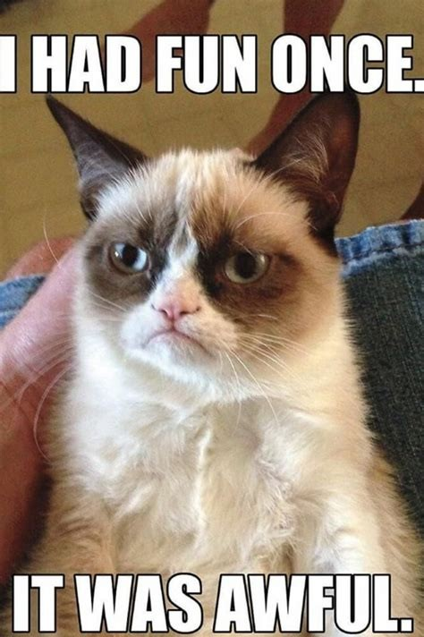

Why Cats Rule Online
Cats are one of the most popular animals on the internet because they are funny, unpredictable, and easy to share.
From memes to videos, cats have become a huge part of online culture. People love seeing cute and relatable cat content.
